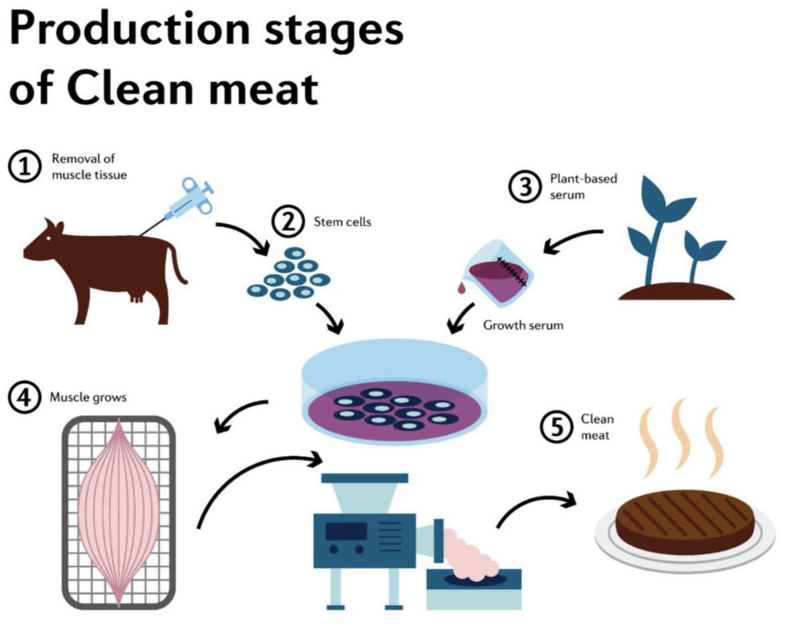

First cell-grown meat on sale
The future of food will most likely include “lab grown” or “cultivated” meats. Many of the technologies are here today. In the 2020s these will continue to reach consumers, albeit at a high price point.
Image source: Good Food Institute
Cellular agriculture is still too expensive to achieve wide-scale commercial traction. Over the coming decade, costs will decline as scientists improve the media and growth factors required to grow the cells, make advances in scaling, and reduce the cost of bio-reactors. In the 2020s, the first lab-grown meats will enter the market, competing with high-end and expensive animal products.